✨ できること
- 📁 フォルダー分け「AI関係」「地元」「学長・運営」のように、チャットをまとめて置けます
- ↕ 好きな順に並べるつかんで動かすだけ。フォルダーの順番も入れ替えられます
- 🔔 通知の合計が見えるフォルダーを閉じていても、中のチャットの通知の数が見出しに出ます
- 📅 カレンダーに登録告知の文字を選ぶと、日時を拾ってGoogleカレンダーに入れられます
🧩 入れ方(5分)
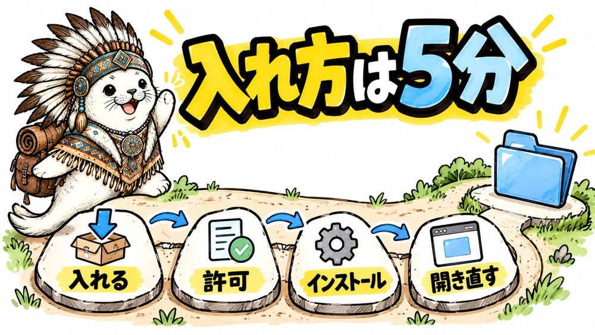
Chrome の拡張機能「🐒 Tampermonkey(タンパーモンキー)」の上で動きます。パソコンの Chrome で進めてください。
- 🐒 Tampermonkey を入れる
Chrome ウェブストアは、Chrome に機能を足す「拡張機能」を配っている Google の公式のお店です。
Chrome ウェブストアの Tampermonkey を開く
右上の青い「Chrome に追加」→「拡張機能を追加」を押します。もう入っている人は「Chrome から削除」と出ているので、次へ。
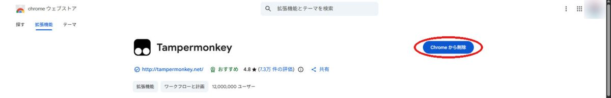
- Tampermonkey に「ユーザースクリプト」を許可する
Chrome のアドレス欄(画面の一番上の、URL が出ている所)にchrome://extensionsと打って Enter。拡張機能の一覧で、Tampermonkey の「詳細」を押します。

「ユーザー スクリプトを許可する」をオンにします。
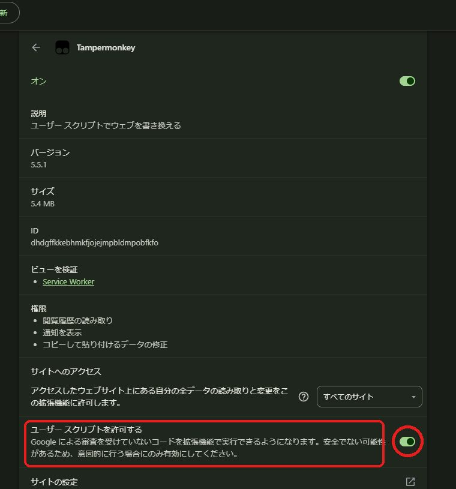
この項目が無い古い Chrome の場合は、右上の「デベロッパー モード」をオンにします。 - このツールを入れる
リベ チャット フォルダーをインストール
🐒 Tampermonkey の「ユーザー スクリプトのインストール」の画面が開くので、左下の「インストール」を押します。
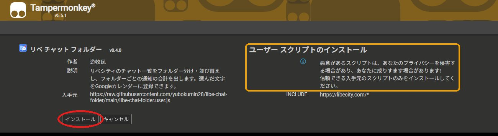
右に「悪意があるスクリプトは…」と怖い注意書きが出ますが、Tampermonkey がどのスクリプトでも出す決まりの文です。「入手元」が raw.githubusercontent.com/yubokumin28/…、「INCLUDE」が libecity.com/* なら本物です。見た目はちょっと怪しいけど、中身はとってもいいツールです。 - リベシティを開き直す
リベシティをもう一度開くか、ブラウザの更新ボタン(アドレス欄の左の ↻。キーボードなら F5)を押します。「参加チャット」の一覧の上に、青い「＋ フォルダーを作る」が出たら完了です。
リベシティを開いたまま右上の 🐒 Tampermonkey のアイコンを押し、メニューに「リベ チャット フォルダー」と緑のスイッチが出ていれば、うまく入っています。
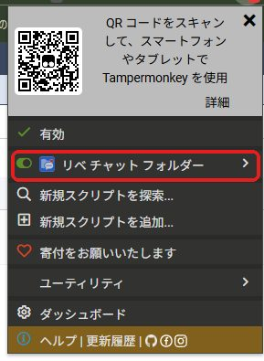
新しい版は Tampermonkey が自動で取りに来ます。作ったフォルダーは更新しても消えません。
📁 使い方
フォルダーを作って、チャットを入れる
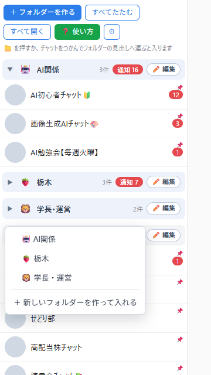
① 一覧の上の「＋ フォルダーを作る」を押して、名前を入れます。
② チャットにマウスを乗せると、左下に 📁 が出ます。押すと、どのフォルダーに入れるか選べます。
チャットをつかんで、フォルダーの見出しへ運んでも入ります。
好きな順に並べる
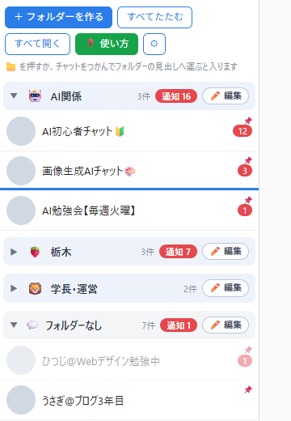
チャットをつかんで動かすと、入る場所に青い線が出ます。チャットの上半分で離すとその上、下半分で離すとその下に入ります。
フォルダーの見出しをつかめば、フォルダーごと順番を入れ替えられます。
「フォルダーなし」も好きな順に並べられます。リベシティの並び(新着順)に戻したい時は、その見出しの「✏️ 編集」から戻せます。
通知の見方
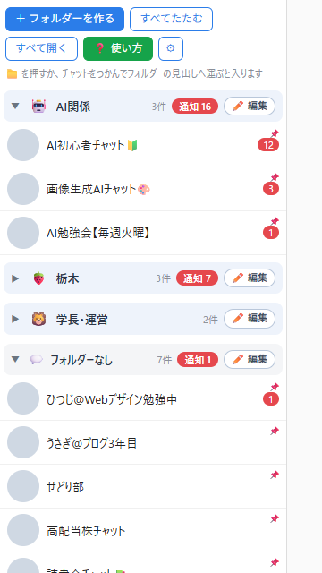
見出しを押すと、フォルダーを開いたり閉じたりできます。閉じていても、中のチャットの通知が見出しに出ます。
| 通知 16 | 自分あての通知の合計(チャットに出る数字を足したもの) |
|---|---|
| 全体 2 | @ALL の全体通知(オレンジの点)が来ているチャットの数 |
名前・アイコンを変える、フォルダーを消す
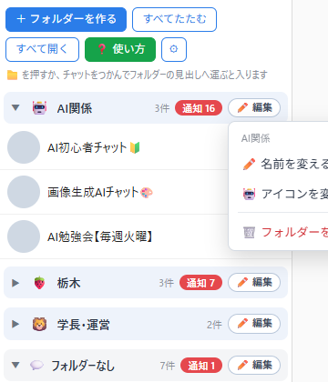
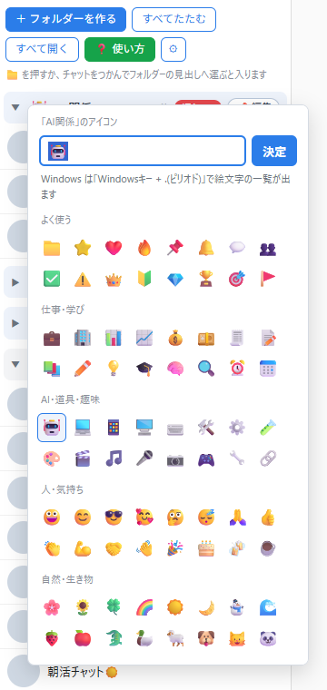
見出しの「✏️ 編集」から、名前を変える・アイコンを変える・フォルダーを消す、が選べます。
見出しのアイコンを直接押しても選べます。一覧に無い絵文字は、上の入力欄に入れて Enter。Windows なら「Windowsキー + .(ピリオド)」で絵文字の一覧が出ます。
フォルダーを消しても、中のチャットは「フォルダーなし」に戻るだけで、チャット自体は消えません。
📅 Googleカレンダーに登録
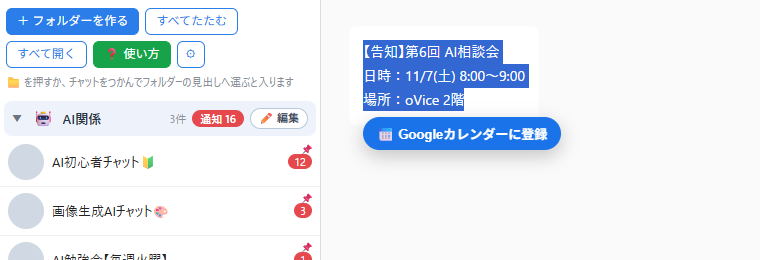
告知の文字をマウスでなぞって選ぶと、すぐ下に「📅 Googleカレンダーに登録」が出ます。押すと、日時と場所を書き込んだ予定の作成画面が開くので、確かめて「保存」を押してください。
入るのは、その Chrome でログインしている自分の Google カレンダーです。このツールが予定を勝手に入れることはありません。
読める書き方の例: 11/7(土) 8:00〜9:00 2026年12月5日 午後3時から5時 (火)20:00〜 明日 21時半
🚚 引っ越し・やめ方
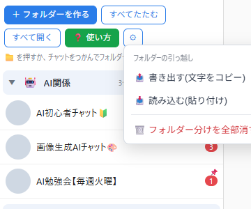
別のパソコンへ移す: 一覧の上の「⚙」→「📤 書き出す」でコピーし、移す先の「⚙」→「📥 読み込む」に貼り付けます。
他のパソコンとは自動でつながる?: つながりません。フォルダー分けは、そのパソコンの Chrome の中(Tampermonkey の保存場所)だけに入っていて、外へは送りません。2台で使う時は、もう1台でも入れ方の①〜④をやってから、上の「書き出す」「読み込む」で写してください。スマホでは動きません。
一度外して、また入れた時: フォルダー・名前・アイコン・並び順は、そのまま戻ります(リベシティのページ側にも控えを置いています)。
全部消したい時: 「⚙」→「🗑️ フォルダー分けを全部消す」。
やめる時: Tampermonkey のメニューで、このツールをオフにするか削除します。
🙋 困った時
| 「＋ フォルダーを作る」が出ない | 入れ方の②「ユーザー スクリプトを許可する」がオンか確かめて、リベシティの画面でブラウザの更新ボタン(↻)を押してください。 |
|---|---|
| 急に動かない・表示がおかしい | ① chrome://extensions を開き、右上の「デベロッパー モード」をオン → 左上の「更新」を押す(拡張機能が新しい版に入れ替わります) ② リベシティに戻ってブラウザの更新ボタン(↻)を押す。 |
| 🐒 Tampermonkey のアイコンを押すと、青い帯が出る | 「ユーザー スクリプトを許可する」がまだ、という合図です。帯を押すと設定が開くので、スイッチをオンにします。「このページへのアクセス権なし」は新しいタブなど Chrome 自身の画面で出る文で、リベシティを開けば動きます。QR コードの帯はスマホ版の案内なので × で閉じて大丈夫です。作った人と使う人で画面は同じで、違うのは許可が済んでいるかどうかだけです。 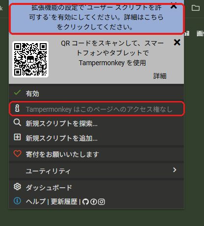 |
| 会社のパソコンでスイッチが押せない | 会社から配られたパソコンは、会社の管理者が Chrome の設定を決めていることがあります。「ユーザー スクリプトを許可する」やデベロッパー モードが押せない時や、「管理者によって管理されています」のような表示が出る時は、そのパソコンでは使えません。勝手に変えようとせず、家のパソコンで使うか、会社の管理者に相談してください。 |
| フォルダーに「あと◯件は未読み込み」と出る | 一覧の下の「さらに読み込む」をまだ押していない分です。ツールが自動で押すので、少し待つと揃います。 |
| カレンダーの日時が違う | 作成画面で直してから保存してください。日付が無い文字は、今日の終日の予定として開きます。 |